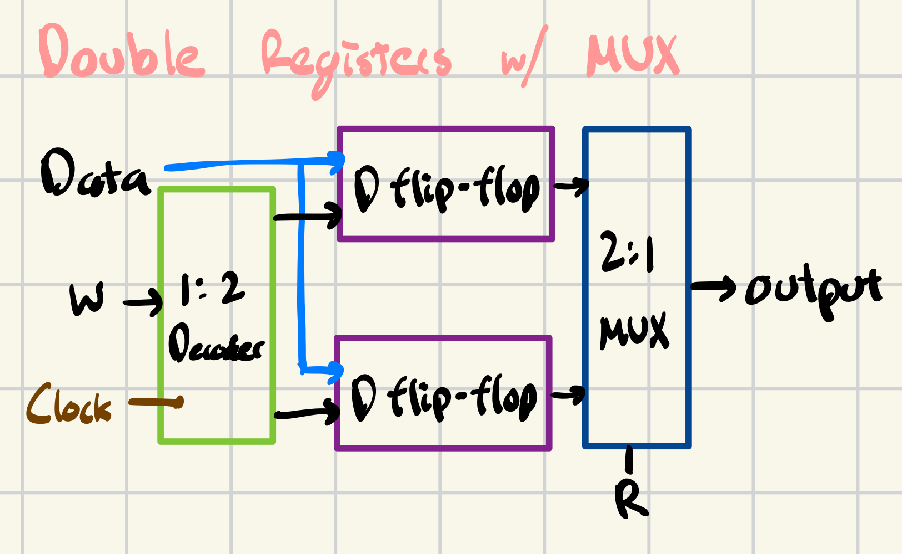
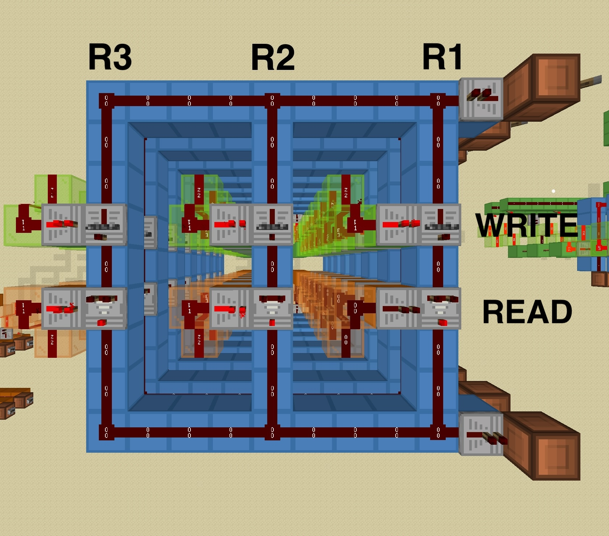

Now that we know d-latches and d flip-flops, let's visualize what storing two bits of memory would look like with all the prior combinational circuits that we've built.
We have our decoders (which we've seen before) that allows us to pick the register we want to write to. Although the data (blue input bus) is fed to both registers, we only write to the register based on the decoder. After we build the registers, we create a multiplexer-decoder circuit to read a specific register. This is synonymous to the opcodes we used to select operations on the ALU. Lastly, the clock is a pulse that will allow us to trigger the enable signals in each bit (release the repeater lock)
This d flip-flop design can stack upwards to represent 8 bits and can be used in conjunction with muxes to select the right register in memory to read/write to at each layer. When we want to write to some register, we release the repeater lock (a signal from our decoder), and allow signal to propagate.
Great, we can write to a register, but what about reading from that register? We can use a comparator on the output of the d-latch (which will indicate whether or not some register has some value at a location). We have another "read" line, that is also held by a signal from our decoder.
At a very basic level, writing to a register is just a series of d-latches and reading from a register is a series of comparators. Here is what one layer looks like from above. Note that the top right redstone lamp is data to write (hence the lever), the bottom right redstone lamp is the data read at a layer. The glass towers are signals from the decoder telling us which register to read from and write to.